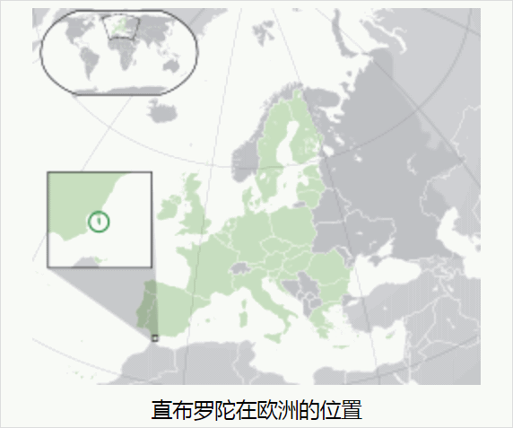

“高贝利，高伯乐，高不辣，高斯通”，麦剑桥挠着头皮，“这些名字看上去都特么长得一样”。
“你还是换个情报来源吧，你看《太阳报》记者就体贴民情”，麦牛津递过来一份报纸，“博彩专版上都用‘高俅’指代，伦敦高俅、卡迪夫高俅、爱丁堡高俅、都柏林高俅……赌徒一看就明白，不会下错注”。
“就咱这儿不一样？”，麦剑桥接过报纸，找了半天没找到“贝尔法斯特高俅”的赔率。
“兲下五分，北爱尔兰疲敝，外有强敌觊觎，内有新芬党缓则作祟”，麦牛津长叹一声，“伯爵临危受命，亲自下场担任足协主席”。
“伯爵当足协主席和赔率有什么关系？”麦剑桥还在找，“伯爵的赔率也没有吖”。
“你就不能动动脑子？难怪《太阳报》三天两头编没品笑话，说爱尔兰人都是傻哔，哪怕考上大手名校也一样”，麦牛津发火了，“伯爵又不姓高，宁可试行三分制也不用高俅制①”。
“政治我不懂，足球我还是懂的”，麦剑桥反唇相讥，“只有杯赛才需要每场决出胜负，联赛就不用”。
“你的脑筋还停留在万恶的旧社会吧？现在已经是百善の新时代了”，麦牛津讽刺，“你没听说么，坐船出海度假十二天，回到岸上看见万人空巷以为自己来到了外星”。
“临时改赛制也不打个招呼，真是白金汉宫一拍脑袋下的圣旨吖”，麦剑桥嘟囔，“兲子好蹴鞠，宫中多断腿”。
“总而言之五个足协都差不多，坚决贯彻落实国王陛下系列重要讲话精神，全面深化竞技体制改革，各显神通花样百出”，麦牛津补充，“就连大洋彼岸的花旗足协都特意凑热闹，不仅用倒计时，还把点球改成单刀赴会呢”。
“单刀赴会，嗯，听起来就武德充沛”，麦剑桥评价，“你总是喜欢用一些金戈铁马状字眼”。
“体育就是和平时期的战争嘛”，麦牛津沾沾自喜，“真正的战争什么样，我赌你不愿意见识到”。
“没吃过猪肉总见过猪跑，总有吟游诗人眉飞色舞的描绘战场的浪漫”，麦剑桥叶公好龙，“上次你送我那两本小说，啥名字来着，我还没来及看呢”。
“《是，将军》《是，元帅》”，麦牛津提醒，“慕尼黑《人民观察家报》连载，我老婆翻译的”。
“我看媒体才是和平时期的战争”，麦剑桥反驳，“那报纸我听说过，叫嚣着优等民族需要生存空间，连载小说也是协助宣传部门动员炮灰吧？”
“恰恰相反，是丑化帝国中央官僚的喜剧”，麦牛津知道麦剑桥还没看之后有点不高兴了，“说陆军鬼畜把所有位置都占住了，还成天大骂海军马鹿，巴伐利亚连个出海口都没有，操什么心吖”。
“我看是指桑骂槐，这剧情听起来像联合王国”，麦剑桥也感兴趣了，“你到处钻营混成学生会主席费多大劲，我呢炼金术学到初一就参军入伍，还不是照样拿了博士学位”。
“联合王国可没人看不起海军，顶多嘲笑海军陆战队”，麦牛津有不同意见，“召之即来挥之即去的军部公仆，谁都不待见，好比那被禽兽双方扫地出门的燕么虎”。
“白金汉宫总得有直属部队，就算护国公复生，也来得及跑路”，麦剑桥说，“陆军靠不住，海军也未必靠得住，没准还惦记着里通外国趁乱改朝换代呢，随便找个贵种山呼万岁架起来当摆设”。
“如今联合王国经济稳中向好，大陆列强怂得一哔”，麦牛津评价局势，“我看一时半会是乱不起来了”。
“所以都操心和平时期的战争了”，麦剑桥继续钻研赔率，“不知道圣上怎么想的，手心手背都是肉，非得五个足协打出个高低贵贱来”。
“足协有五个，但是军部只有一个”，麦牛津说，“明年去罗马参加军运会，由谁带队，不好说吧”。
“条条大路通罗马②吖”，麦剑桥竖起大拇指，“真不愧是九国通衢”。
“抽烟伤肺，喝酒伤肝”，麦牛津吐了个烟圈，喝了一大口啤酒，“烟酒不沾，就会伤心”。
“你抽的这个是什么玩意儿？”麦剑桥鼻翼颤动，“怎么闻起来有点怪？”
“二手烟闻着当然怪了”，麦牛津掏出一个化妆盒放在桌上，“你不尝尝？”
“原来是夹了私货”，麦剑桥把盒子扒拉过来打开一看，里面分格装了五颜六色的糊状物，“这玩意怎么用吖？”
“唔，你的烟斗是欧石楠根一体成型版吖”，麦牛津看着麦剑桥掏出烟斗，“贵是贵了，不怎么方便”。
“三接头的也有”，麦剑桥说，“不过只带了过滤嘴出来”。
“虽然不是特制的，但也凑活用了”，麦牛津指导，“自己选口味，掺和起来，塞进过滤嘴里面”。
“一种一种来吧”，麦剑桥闻着薄荷、可可、咖啡、几种水果还有若干不知名香料混合起来的味道，一时难以抉择，于是先蒯一小勺抹进过滤嘴，然后开始卷纸烟，“边角料也不能浪费吖”。
“散装的烟丝品质通常不太高，卷烟抽起来全是纸味”，麦牛津发表心得体会，“还是预制烟球更省心”。
“预成型的也会掉渣吖，舍不得”，麦剑桥知道那种按照烟斗容量提前包装好的耗材，都用优质烟丝加工，剩下的才会散装上市，“人工费也就罢了”。
“一分钱一分货”，麦牛津看麦剑桥也惬意的吐了个烟圈做享受状，“一镑钱一先令货”。
“这玩意有多贵？”麦剑桥听了一哆嗦，“你可别是钓鱼碰瓷吧？”
“怎么会？老交情了，今天我请客”，麦牛津伸手示意麦剑桥安心，“主要是贵在物流成本之上，从百善の新世界不远万里运过来，还需要保鲜法术加持”。
“可别跟茶叶似的，全贵在箱子上”，麦剑桥讽刺，“外地涨，我也涨，外地对我有影响；外地降，我不降，我与外地不一样”。
“茶叶又不是必需品，有钱享受精致生活的士大夫们掏点爱国税怎么了？”麦牛津狡辩，“你看啤酒就不贵”。
“泡茶需要烧开水吖”，麦剑桥反驳，“没找着煤矿之前，凉水还不如啤酒更干净”。
“现在也要与时俱进了”，麦牛津讨论时事新闻，“虽然用不着保护本地酿酒产业吧，但是对从大陆尤其是帝国进口的啤酒加征关税，也已经提上了唐宁街十号的议程”。
“唐中堂挺有魄力的嘛”，麦剑桥发表感想，“极限施压有一套”。
“就连殖民地都不放过”，麦牛津随声附和，“它又不是背井离乡之徒甘心久住之辈选出来的”。
“真要是烘托万国来朝万民拥戴的盛世景象，怎么也得找几个摆设当幌子吧？”麦剑桥感慨，“从犄角旮旯找几个身着奇装异服口吐禽言兽语的杂胡野种牛鬼蛇神，去下院当举手机器也好”。
“苏格兰议会都没了，西敏寺的票托儿早就有了”，麦牛津嘲笑，“白金汉宫怎么可能把犄角旮旯放在眼里”。
“打扰，拼个桌”，说话间过来一个家伙，端着酒杯一屁股坐下，“两位，聊什么呢这么开心？”
“随便瞎鸡巴扯淡而已”，麦剑桥指着麦牛津，“这孙子喝多了就管不住嘴”。
“你丫还不是一样”，麦牛津指着麦剑桥，“抽烟喝酒都堵不住你丫这张嘴”。
“要不找点乐子？”来人掏出几个骰子，“耍两把？”
“一人不喝酒”，麦剑桥看着不速之客，皱着眉头做警惕状。
“俩人不耍钱”，麦牛津把桌上香料盒收起来。
“现在不是已经三个人了么？”来人说，然后补充，“你俩还是一伙的”。
“也行，我陪你”，麦剑桥同意，“他就算了”。
“钱不够跟我说”，麦牛津看着不速之客，就好像看着一只扑火的飞蛾。
“你是来向我行贿的么？”麦剑桥看着不速之客又来了，感到好笑，“你听过那个猎人与熊的笑话么？”
“听过”，来人解释，“我怀疑你在出千作弊，虽然我没有证据”。
“输不起就造谣污蔑栽赃陷害么？”麦牛津讽刺，“我还特意提醒过你”。
“不，因为我在作弊”，来人坦荡承认，“即便如此，我仍然看不出你是怎么赢的”。
“请问尊姓大名”，麦剑桥正经起来了。
“一个小人物而已”，来人轻描淡写的说，“朋友们都叫我尼摩船长”。
“你的船呢？”麦牛津问，看不出这位身上有水手的痕迹。
“在土伦船台上造着呢”，尼摩船长解释，“正在到处找人入伙”。
“法国人？”麦剑桥警惕起来，“来这里干什么？”
“确切的说，是摩纳哥”，尼摩船长解释，“你知道那里只有赌场没有船厂”。
“在法国军港造的船”，麦牛津追问，“不那么简单吧”。
“很简单，一条游轮，只不过使用了最新技术”，尼摩船长解释，“当然，马尔库罗纳亲王殿下运用了一些人脉”。
“来这里干什么？”麦剑桥追问，“地中海离这里有点远吧？”
“预定航线不是地中海，而是大西洋”，尼摩船长解释，“当然，与帆船不同，续航力有足够保障，对给养的需求也不那么苛刻，在船上呆着还是很舒适的”。
“肯定有很多娱乐项目”，麦牛津继续问，“为什么找到我俩，干远洋贸易这行的人多得是”。
“因为钦定接班人马尔库罗纳太子殿下，从小比人聪明还比人努力，巴黎大学的高材生”，尼摩船长解释，“为了王家体面，坚持‘谈笑有鸿儒往来无白丁’原则，寻常贩夫走卒入不得眼”。
“明明家里是开赌场抽水的坐寇”，麦剑桥嘲笑，“派头还挺足”。
“虽然算不上是沐猴而冠吧”，麦牛津帮腔，“总能当得起衣冠禽兽的称呼”。
“上有所好下必甚焉”，尼摩船长也不生气，“贵国还不是一样”。
“你最好把这事跟我说清楚”，麦牛津严肃的质问麦剑桥，“否则以后的合作会有些麻烦”。
“你这是在审问我么？”麦剑桥反问，“咱们是同事，但不是搭档，不同部门之间也有保密原则”。
“我可是从来没掺和过你的事，顶多知道个‘波罗的海干散货指数’。反过来你倒是捞过界了，大西洋的事情应该由我负责才对”，麦剑桥手里搓着两块琥珀，“那么为啥那个尼摩船长拿出这东西之后，你就改口帮他劝我入伙呢？”
“你虽然表面上没掺和过，但不至于一无所知。我可以告诉你，你想必也早就知道了”，麦剑桥说，“罗刹好不容易才打通了出海口，皮毛木材之类普通货物都可以从圣彼得堡装运，只有琥珀例外，帝国中央、汉萨同盟和利沃尼亚宝剑骑士团勒令必须在里加交割实物”。
“但是走私想必同样也很猖獗吧”，麦牛津以己推人，“走陆路成本太高，普通货物划不来，但是琥珀之类低尺寸高附加值的管制品，就例外了”。
“更多的还是走水路，虽然波罗的海上面到处都有海关的缉私艇”，麦剑桥解释，“神棍拿着活力探测器乱转，夹带不是那么容易的”。
“那你们通常怎么办？”麦牛津还是以己推人，“带活力的东西瞒不过超凡人士”。
“但是无论是活人还是仪器，感知的范围都有极限”，麦剑桥和盘托出，“通常都是装箱用绳子吊在船底，超过一定深度就探测不到了，检测完毕等人撤了再拉上来”。
“这两块是怎么回事”，麦牛津把两块琥珀还给麦剑桥，“正在交配的一对苍蝇，放屁的蟑螂，不是什么好收藏品吧”。
“正因为品相独特才用来当接头的信物，防伪手段足够了”，麦剑桥解释，“但是有一次，船员开了好久之后把绳子扯上来发现丢了，连同箱子一起掉进海里了，都不知道掉在哪里”。
“那个尼摩船长是怎么捞上来的呢？”麦牛津问，“也没有证据与你有关吖？为啥你立刻就急了呢？”
“那我就直说了，走私船和货物并不是必须用绳子连在一起的”，麦剑桥似乎退了一步，“有些海域可以利用洋流自动漂流，到了接头地点再汇合，分段接力运输”。
“北溪”，麦牛津说了一个词，“略有耳闻”。
“确切的说，是北溪二号”，麦剑桥纠正，“路线不完全重合，但是很明显已经被尼摩船长发现了”。
“明明是银饼，为什么叫做金坷垃？”麦牛津看着桌上一堆银质薄片，“定金我就收下了”。
“因为‘标准合法高俅’实在是太小了③”，尼摩船长解释，“虽然便于夹带吧，但一不留神掉在哪里就找不着了”。
“自然度量衡坚持两千多年不动摇吖”，麦剑桥讽刺，“虽然说黑钱见不得光吧，连砝码都不敢用官府提供的，有些过于谨慎了”。
“小心无大错，那谁一生唯谨慎嘛”，尼摩船长也不生气，“再说了，巴尔干那边乱成啥样你也知道，谁也信不过谁”。
“就信得过德鲁伊？”麦牛津质疑，“万一他们种出点奇怪的豆子当砝码，你们只能吃哑巴亏了是吧？”
“所以才特意挑了不用德鲁伊也能种的植物吖”，尼摩船长解释，“赞美上帝，希腊人还不信上帝的时候，就获得上帝的恩赐了”。
“手艺挺不错的嘛”，麦剑桥捻起几枚银饼，在手指之间轻快的弹动，令人眼花缭乱，“费这么大劲划得来么？”
这些亮晶晶的薄片一看就不是铸造的，而是把银豆用榔头砸扁，形状不规则，两面也没有任何图案，更没有修饰边缘，但是奇怪的是每一枚的重量都相当精确的保持一致，职业赌徒也很难感觉到个体差别。
“那就是商业机密了”，尼摩船长不解释，“无可奉告”。
“你的生意还真是遍及五湖四海吖”，麦牛津感慨，“波罗的海、北海、大西洋、地中海，到处都有”。
“还有黑海”，尼摩船长补充，“我可从来没说过只有一条船”。
“既然你消息灵通，那么解释解释最新赔率”，麦剑桥递过来一张报纸，“为啥多了个南斯拉夫？”
“本来是唤作‘达尔马提亚’的，布达佩斯决定‘巴尔干生产建设兵团’单独组队，借一块招牌当幌子”，尼摩船长解释，“但是被维也纳否决了，维也纳专门任命了一个唤作‘兹拉坦’的家伙担任南斯拉夫足协主席，到那边去选拔同文同种的同胞”。
“下巴真是神奇的操作”，麦牛津感慨，“三个足协还嫌不够，还得再加一个”。
“因为军部也是三个吖，维也纳或许能指挥得动布拉格，但是绝对指挥不动布达佩斯”，尼摩船长解释，“吵得最凶的时候都到了‘七块论’呢，但是好歹都冷静下来了，地理上先分两大块，民族识别宜粗不宜细”。
“冷静？我看是马扎尔人闹得最凶吧？”麦剑桥嘲笑，“最起码巴尔干其它犄角旮旯闹不过它”。
“是啊，负责收拾那帮杂胡野种的‘巴尔干生产建设兵团’就是布达佩斯军部下属机构，维也纳当然不让独立组队”，尼摩船长谈论别人家八卦也用不着客气什么，“但是钉子总要安插，趁火打劫吞了波斯尼亚之后，急匆匆的宣布直辖”。
“但是名义上还是托管吧？总不能明火执仗设立军部”，麦牛津嘲笑，“维也纳在当地也没有多少民意基础，匈牙利当然更没有”。
“所以找个民族大融合的象征过去收编青壮了，打着竞技运动的旗号”，尼摩船长解释，“这位兹拉坦主席，父亲是波斯尼亚人，母亲是克罗地亚人，暂时还顾不上塞尔维亚”。
“那么为啥赔率这么怪？”麦剑桥质疑，“多少赌徒看好南斯拉夫？”
“因为塞尔维亚没有名分，不能组队参赛吖，当地优秀蹴鞠选手当然就跑到萨拉热窝报道去了”，尼摩船长回答，“大丈夫行不更名坐不改姓，风土人情事无不可对人言，只需要把拼写从基里尔字母换成拉丁字母就搞定了”。
“土耳其就眼睁睁看着不管？”麦牛津问，然后自问自答，“也是，焦头烂额自身难保，连蹴鞠都要管，那就啥也管不过来了”。
“你们知道为啥斯拉夫人被称为斯拉夫人么？”尼摩船长忽然问了个奇怪的问题，“甭管他们自己怎么称呼自己，是否认为自己是一伙人”。
“不是‘奴才’的意思么？据称祖传优良品质就是忠厚老实，血脉固化了核心意识和看齐意识，忠诚不绝对就是绝对不忠诚”，麦剑桥直接回答，“说当年无论谁家主子缺牲口了，就派人过去逮，德意志人也去逮，土耳其人也去逮，凡是逮来的都是奴才，管他姓甚名谁从哪里来到哪里去”。
“你说话太损了，揣着明白装糊涂也得看场合，公开发言就不要自我矮化与帝国理工或伦敦政经的文盲相提并论”，麦牛津纠正，然后炫耀，“大手名校里面拉丁语是必修课，课堂上提到了，普罗科皮乌斯用希腊语记录的‘斯科拉波’或者其它变体，是他们语言当中‘光荣’的意思”。
“但是现在的英语里面，到处都是碰瓷是吧？”尼摩船长诱供，“名不正则言不顺，言不顺则事不成。吟游诗人炮制那许多异世界冒险题材的时候，都明白这个道理”。
“大陆还不是一样”，麦剑桥正经起来了，“吟游诗人曰若稽古的时候，动辄提到当年查理曼身后三分天下，碧眼紫髯的日耳曼人路易特意派遣武德充沛的勃兰登堡和维也纳，去东欧南欧捕奴呢，据称那是两岸关系，不，两族关系进入同呼吸共命运的新时代之里程碑事件”。
“就是这样，谁嗓门大谁有理”，尼摩船长总结，“颠倒黑白混淆是非造谣污蔑栽赃陷害都没关系，无论受害者是心平气和摆事实讲道理还是哭天抢地声嘶力竭申冤诉苦，都没意义，记忆只有七秒钟的人民群众当作耳旁风而已，这还是舆论阵地值班临时工懒得以‘政治敏感’理由将其‘亦当删去’的时候”。
“人民群众”，麦牛津皱着眉头重复这个字眼，“这种遣词造句的方式，与你的身份不太相符吖”。
“你觉得这张报纸的目标读者群到底是谁呢？”尼摩船长没有正面回答，而是举起手中那张报纸，《太阳报》博彩版，“其它版面的内容，你们应该也看过吧？”
“当然，买一份报纸又不是为了看广告的”，麦剑桥搭腔，“正刊三版连载的传奇故事配插画，也是打发时间的日常消遣”。
“最近那个‘本报特约评论员’，又开了一本新书”，尼摩船长提醒，“《史上最强兽人先生的欢乐异世界后宫之旅》”。
“这是给谁打广告呢？”麦牛津设问加反问，“应该又是外籍兵团的鞑官吧？”
“这你就错了”，尼摩船长纠正，“虽然赞助商是谁还不知道，但是主角的原型，正是摩纳哥的小马亲王”。
“这样啊”，麦剑桥听懂了，“写成长得像人类的半兽人也能接受，总不能实事求是写成一身绿皮的哥布林吧？”
“渎圣同盟条约还没到期么？”麦牛津自问自答，“马德里下巴还没挂，维也纳下巴也没挂，不过闺女倒是订婚了，找了洛林入赘，我看呐，快了”。
“所以说人民群众的记忆只有七秒钟呐，哪怕他们会说人话”，尼摩船长感慨，“四十年前《费加罗报》三版连载的传奇故事，伴随着里斯本一辆转生马车的召唤，被编辑腰斩了，钦定主角龙傲天的冒险经历戛然而止”。
“废物利用嘛，新瓶装旧酒嘛”，麦剑桥讽刺，“人民群众只会说一种人话，一代人有一代人的人话”。
“任重而道远呐”，麦牛津感慨，“四十年前黎塞留阁下正当壮年，中统还不至于文恬武嬉，现在路易十四陛下大限将至，接下来看军统的了”。
“这么少？”女人掂掂钱袋，表情轻蔑，“还都是银币”。
“那是我的钱！”刚挂好大衣的麦剑桥眼皮一跳，“不是组织经费”。
“你以为组织不知道你在趁机挣外快么？”女人反唇相讥，“光凭死工资，还能活成个人样儿不错了”。
“知道了又怎么样？这也是潜规则”，麦剑桥嘴硬，“又让马跑又不让马吃草，哪儿有那种好事？”
“就是外快也太少了”，女人嘲笑，“最近手风不顺么？”
“韭菜又不能天天割，哪怕傻哔连输几天也知道惹不起躲得起了”，麦剑桥解释，“当然距离戒赌还差得远”。
“不输光了不能出门的赌场，开不了多久”，女人同意，“这我知道”。
“哪怕是随便出门的茶馆酒馆，输急眼了也会憋着在小巷里堵人抢回来”，麦剑桥搭茬，“过犹不及，坐庄还得注意分寸”。
“所以最好是输光了浮财也不能下船，还得把前几辈子家产和后半辈子都搭进去”，女人评价，“那条游轮啥时候能造好？”
“造好了也会先在地中海试航”，麦剑桥解释，“没有技术问题了再装修好开过来”。
“为啥非得大老远横渡大西洋呢？”女人问，“就在这边当活动赌场不好么？”
“王家海军可不喜欢有条船来回来去绕着英伦三岛转悠”，麦剑桥解释，“总得有条固定航线，正好打着长途旅行观光的名义，大西洋正中间没人能下船”。
“费这么大劲划得来么？”女人问，“听说游轮造价不低，还用了最新技术”。
“多少人看着摩纳哥眼红，但还不能开这个口子”，麦剑桥解释，“日进斗金但有悖于基督教精神文明建设的生意，还是放在境外比较好，挂上外国旗的游轮也算”。
“查抄黄赌毒也是苏格兰场的外快吖”，女人感慨，“本地赌徒没几个能不远万里跑到摩纳哥挥金如土的，按色目人讲话，‘山不来就我，我便去就山’④”。
“这不是老马亲王送货上门了么”，麦剑桥嘲笑，“还是老规矩，伦敦、贝尔法斯特和纽约各占三成”。
“巴黎就没意见？”女人问，“听说还是在土伦船台上造的”。
“渎圣同盟还没破裂呢，能有什么意见？”麦剑桥嘲笑，“再说了都知道关系越来越淡，还不许土耳其人找下家么？”
“联合王国可未必会割让一块地皮当租界，还美其名曰‘一国两制高度自治’”，女人评价，“摩纳哥准备把身家性命都压在船上不成？那岂不是成了疍民了？”
“联合王国最喜欢慷他人之慨，羊毛出在狗身上”，麦剑桥讽刺，“听说已经惦记上直布罗陀了”。
“这么小？”女人盯着麦剑桥裤裆，表情轻蔑，“搁地图上就跟直布罗陀似的③”。
“足够收拾你的了！”麦剑桥恼羞成怒，“少废话！”
“希望你说到做到”，女人嘲笑，“可别把职业习惯带到私人生活当中”。
“我们撒谎，我们诈骗，我们偷窃”，麦剑桥背诵社训。
“我们暗杀，我们抢劫，我们破坏”，女人接茬。
“那也是为了……”麦剑桥话说一半。
“国家利益”，女人接茬。
“别小看《太阳报》狗仔队，凡是爆出来的八卦，谁出轨谁通奸谁家后院起火头顶绿得发黑，肯定是真材实料铁证如山”，麦剑桥长出一口气，“就说伯爵家衙内，头一次去伦敦，没见过市面，逛窑子的时候让狗仔队盯上了，三版连载《伦敦十二秒钟》⑤嘲笑了大半年”。
“这么快？”女人燃起一支烟，表情轻蔑，“看来《伦敦十二秒钟》剧组真该找你主演”。
“你还真是学以致用吖！”麦剑桥勃然作色，“刚培训了‘女权三连’，就特么用在我身上了”。
“三天不念口生，三天不写手生”，女人无所谓，“刚学‘清纯三连’那时候拿你练手，你不是挺开心的么？”
“哪怕‘傲娇三连’也就认了”，麦剑桥亲身感受之前，从来没有理解组织的培训课本之炉火纯青程度，纸上得来终觉浅，绝知此事要躬行，“这心理战术实在是太过分了”。
“按照你的建议，我投下庄严的一票，支持了《五分之三妥协案》”，伯爵对麦牛津说，“然后投下了庄严的八又五分之一票，支持了《印花税法》”。
“无代表，不纳税”，麦牛津恭维，“您代表了十二位认真生活快乐工作的青年才俊缴纳增值税，他们想必会感恩戴德”。
“因为信任，所以简单”，伯爵说，“你因看见了我才信，那没有看见就信的，有福报了⑥”。
“那么将来那些在结构性优化当中向社会输出的十年工作经验的平庸员工”，麦牛津问，“还需要代表他们缴纳减记税么？”
“那就不用了”，伯爵回答，“他们会离开舒适区，到百善の新世界去体验‘因为懒，所以穷’的至理名言，广阔天地大有可为”。
“听说那边已经民怨沸腾了”，麦牛津说，“今后连发牢骚都要纳税，无论是报纸、年历、小册子、证书、商业单据、债券、广告、租约、法律文件，还是结婚证书”。
“大三角贸易已经无利可图了”，伯爵说，“现在的百善の新世界，需要白人”。
“以大饥荒倒逼人口有序定向流动也没太大效果，本来已经提前肃反扩大化清洗德鲁伊了”，麦牛津摇头，“没想到黎塞留阁下特意派人过来手把手的传授波尔多液配置方法”。
“天主教徒就是麻烦”，伯爵说，“梵蒂冈只能打嘴炮，圣母院可不是摆设”。
“黑死病之后梵蒂冈就威信扫地了”，麦牛津曰若稽古，“但是圣公会还是很难渗透到南方乡间”。
“如果人民群众不能被我们组织起来”，伯爵如是我闻，“那就不能让他们被任何人组织起来”。
“所以才要趟着三角铁蒺藜搞改革吖”，麦牛津长叹，“简直是抬着棺材上阵”。
“多难兴邦嘛”，伯爵不以为然，“人民群众总是畏威而不怀德”。
“道心惟微，人心惟危”，麦牛津引经据典，“惟精惟一，允执厥中”。
“那个本沃登怎么样了？”伯爵问，“扫帚星乌鸦嘴准备好了么？”
“现在不能发动大部分力量，只能应景搞一些小灾小难”，麦牛津回答，“不过在吟游诗人的吹捧之下，‘帝吉特之苗裔兮，朕皇考曰沃登’已经小有名气了”。
“我觉得选址有些问题”，伯爵质疑，“纽约当地没有多少红脖子，未必信这一套”。
“但是红脖子很少读书看报，也不怎么动脑子”，麦牛津回答，“所以舆论最好还是应该在‘西盎格鲁后约克国’炮制，然后推送到乡下去”。
“那么红脖子喜欢干什么呢？”伯爵问，“除了种地打猎放牧之外，平时都有什么消遣？”
“应该是蹴鞠吧？”麦牛津自己也不太了解民情，“不过那边似乎更喜欢手球而不是脚球”。
“婚礼前夕还特意要求面谈”，尼摩船长严肃的说，“是不是太不谨慎了？”
“最危险的地方通常就是最安全的地方，最紧张的时刻通常就是最放松的时刻”，戴着面纱的女人说，“刺激”。
“对任务还有什么不明白的事情么？”尼摩船长问，“我想你应该不是一肚子话憋着难受惦记着找个人聊聊那么简单”。
“目标已经上钩了，按照‘生活中绝对不会发生的好事’四十个甜梗精心炮制的剧本⑦，把他送上天堂”，女人说，“为什么接下来立刻就要运用四十个虐梗把他打入地狱呢？不能再等等么？我又不是开关，情绪两极切换需要一段时间”。
“时不我待，羊吃人的圈地运动已经接近尾声，手工业者大下岗迫在眉睫”，尼摩船长回答，“但是唐宁街惦记着裁撤公务员的时候，平时不咋管事的白金汉宫忽然来了一句‘你还想给他们送干部队伍？’就叫停了”。
“这道理我懂，之前炒作‘盎格鲁复兴，內德卢德王’的时候你讲过，做掉有勇有谋的领袖换上卧底，把反政府组织黑帮化，抗议行为暴动化”，女人说，“但是目标恰恰是你所形容的那种栋梁之材，在体制内还很有前途，为什么反而要把他逼进诺丁汉森林呢？”
“不是诺丁汉森林而是潘恩森林，新法兰西的人口太少了，仅凭自然增长无法与新英格兰抗衡”，尼摩船长忽然谈论起大洋彼岸，“黎塞留阁下只允许天主教徒定居的政策，虽然保持了队伍纯洁性，但是也限制了自身的发展”。
“不要命的怕不要脸的，白金汉宫给海盗发劫掠许可证，杀伐果断通权达变狠角色亡命徒还有西敏寺封圣，凡尔赛宫和圣母院总是拉不下这个脸”，女人感慨，“死要面子活受罪，没准到最后还是不得不招降纳叛收编山贼土匪”。
“也许死到临头还惦记着如同樱花一般优雅的凋谢呢”，尼摩船长讽刺，“君子死，冠不免。洗脑的大道理念多了，连自己都信了”。
“你的意思是说，这是给新英格兰刁民送去干部队伍，还专挑白皮盎格鲁撒克逊新教徒，不会引起警惕”，女人表示理解，“我会按照指示游说衙内，争取把目标刺配西弗吉尼亚去种玫瑰”。
“后面的事情就由别人负责了，这年头亡命徒有得是，但演技精湛的死士不太好找”，尼摩船长感慨，“叫嚣着把目标灭口，但偏偏还不能伤及毫毛，当众大声密谋故意被目标听见，然后送上自己这几条命，把目标逼去友爱之城，真不容易吖”。
“如果仅仅是杀人放火抢劫强奸就简单多了”，女人帮腔，“随便找点魈魆，大烟抽个够，然后伸手一指目标，就嗷嗷叫着冲上去了”。
“奴隶会破坏生产工具，还会摸鱼磨洋工，上班出工不出力”，尼摩船长摩挲着手里一具精致的双筒望远镜，“给把镰刀确实能割韭菜，但是磨制镜片这种工作⑧，还是需要正常环境当中成长的白人来干”。
（完）
- ① 该字眼最早出现于1992年4月16日的《泰晤士报》。该报自打1981年起就划归默多克旗下媒体，与《太阳报》是盟友关系，配合默契，经常按照岗位职责扮红白脸唱双簧，对傻哔读者进行多方围堵两面夹攻。
- ② 维基词典：Appears in the Latin form
mīlle viae dūcunt hominēs per saecula Rōmam
(a thousand roads lead men forever to Rome
) in Liber Parabolarum, 591 (1175), by Alain de Lille. The earliest English form appears to beright as diverse pathes leden the folk the righte wey to Rome
, in A Treatise on the Astrolabe (Prologue, ll. 39–40), 1391, by Geoffrey Chaucer. - ③
 - ④ 《绿教典》第三章第四节
- ⑤ 《12秒，13年！雷政富再被报请减刑》
- ⑥ 《约翰福音》20:29
- ⑦ 《挑起读者情绪，玩弄读者感情的桥段，更痛的是被说中了》
- ⑧ 《美帝还有可能继续给哈勃延寿吗》